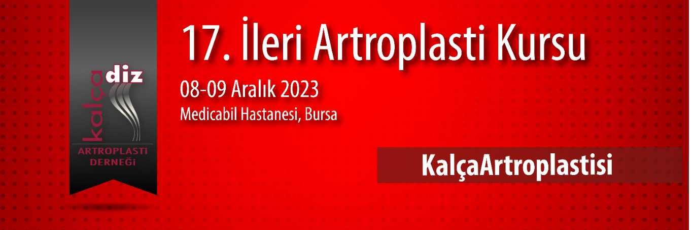

Değerli Meslektaşlarımız,
Kalça Diz Artroplasti Derneği olarak 8-9 Aralık 2023 tarihinde Bursa Medicabil Hastanesi’nde 17. İleri artroplasti kursunu gerçekleştireceğiz. “Kalça Artroplastisi” konusunu ileri düzeyde tartışacağımız iki gün sürecek toplantımızda zor primer vakalar, özellikli vakalar ve revizyon konularını ileri seviyede ayrıntılı olarak teorik ve canlı cerrahiler zemininde interaktif tartışma imkânı bulacağız. Amacımız, temel artroplasti eğitimi almış olan katılımcılarla ameliyata hazırlık, cerrahi sırasında ve cerrahi sonrasındaki ayrıntıları tartışma imkânı yaratmaktır.
Zor kalçada primer artroplasti ve revizyon kalça artroplasti ameliyatları canlı olarak ameliyathaneden naklen yayınlanacak, katılımcıların interaktif olarak soruları yanıtlanacak ve tartışılacaktır.
Düzenleyeceğimiz ileri kalça artroplasti kursunda sizleri de aramızda görmek bizi mutlu kılacaktır.
Saygı ve sevgilerimizle,
Kalça Diz Artroplasti Derneği Başkanı: Prof. Dr. Emre Toğrul
Kurs Başkanı: Prof. Dr. Bülent Erdemli
Kurs Sekreteri: Doç. Dr. Hakan Kocaoğlu
